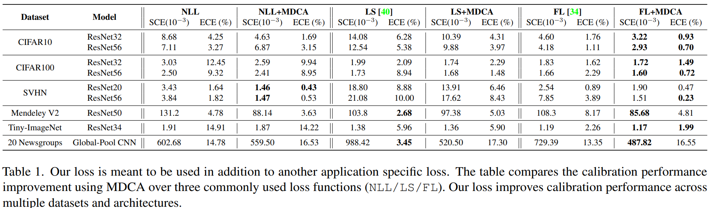
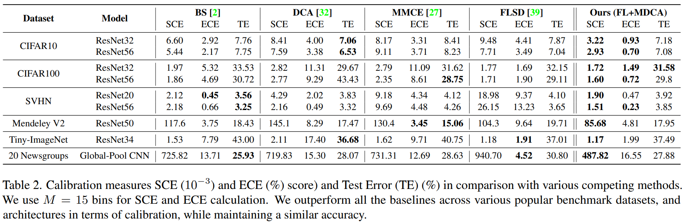
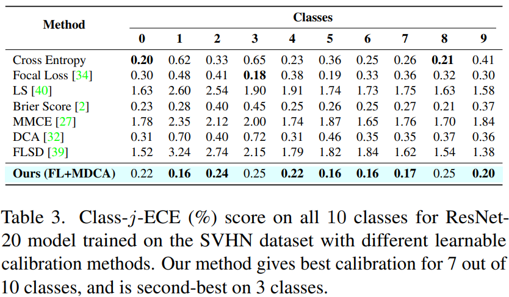

[CVPR 2022] A Stitch in Time Saves Nine
1. Problem Definition
DNN (Deep Neural Network)은 overconfidence 문제가 있다. *overconfidence: 특정 레이블에 대한 DNN의 예측 confidence가 실제 발생 확률에 비해 높은 경우
$P(\hat y = y^* \vert s[\hat y])<s[\hat y]$
2. Motivation
Calibration: 모델의 confidence score와 실제 발생 확률이 일치하도록 하기 $P(y = y^*\vert s[y]=s)=s$ DNN calibration 기술은 크게 train-time calibration, post-hoc calibration, calibration through Out-of-Distribution(OOD) 으로 분류된다. 1) Train-Time Calibration: 학습 단계에서 model calibration을 동시에 수행 2) Post-Hoc Calibration: hold-out training set (주로 validation set)을 이용 calibration 조정 3) Calibration through OOD detection: 학습 데이터에서 멀리 떨어진 OOD 샘플에 대해 낮은 confidence 예측 시행
SOTA(State-of-the-art) calibration 기술들은 예측된 레이블의 confidence만 교정하고, 최대가 아닌 class, 즉 예측되지 않은 class의 confidence는 교정되지 않은 상태로 두는데, 이는 post-processing 사용에 적합하지 않다. 또한, 대부분의 SOTA 기술은 이미지 또는 픽셀 별 calibration은 제외하고, 몇 가지 hyper-parameter를 사후에 학습한다. 이로 인해 도메인 이동 시 보정이나 semantic segmentation과 같은 조밀한 예측 작업에 적합하지 않다.
3. Method
3.1 Background
- Expected Calibration Error(ECE): ECE는 예측 class의 confidence와 샘플의 정확도(accuracy) 간 차이에 대한 가중 평균(weighted average)을 통해 계산된다.
$\sum_ {i=1}^{M} \frac{B_i}{N}\vert A_i-C_i \vert$
$N$: 총 샘플의 수
$B_i$: confidence 범위를 M개의 bin으로 분할할 때, confidence가 $(\frac{i-1}{M}, \frac{i}{M}]$에 포함된 bin의 샘플 수
$A_i$: $B_i$에 포함된 샘플들의 평균 정확도
$C_i$: $B_i$에 포함된 샘플들의 평균 confidence
-
Maximum Calibration Error(MCE): 각 bin의 평균 정확도와 평균 confidence 간 차이의 최댓값. 많이 사용되지는 않는다.
-
Static Calibration Error(SCE): $\frac{1}{K}\sum_{i=1}^{M}\sum_{j=1}^{K}\frac{B_{i_j}}{N}\vert A_{i_j}-C_{i_j}\vert $
$K$: class의 수
$B_{i_j}$: i번째 bin의 j번째 class 샘플의 수
$A_{i_j}$: i번째 bin의 j번째 class 샘플들의 평균 정확도
$C_{i_j}$: i번째 bin의 j번째 class 샘플들의 평균 confidence
- Class-j-ECE: 단일 클래스 j가 전체 ECE에 얼마나 기여했는지 나타내는 척도
3.2 Proposed Auxiliary loss: MDCA
본 논문은 ‘Multi-class Difference of Confidence and Accuracy (MDCA)’ 라는 손실 함수를 사용해 multi-class calibration 기술을 제시하였다. SCE로부터 파생된 손실 함수이지만, 기존에 샘플들을 bin으로 분할함으로 인하여 미분이 불가능하였던 문제를 해결하였다. $L_ {MDCA}$ 는 학습 단계에서 각 mini-batch에 적용되었다.
$L_ {MDCA} = \frac{1}{K}\sum_ {K}^{j=1}\vert \frac{1}{N_ b}\sum_ {M}^{i=1}s_ i[j] - \frac{1}{N_ b}\sum_ {M}^{i=1}q_ i[j]\vert$
$q_ i[j]=1$(샘플 i에 대한 예측 라벨 j가 ground truth인 경우), $q_ i[j]=0$(그 외)
$N_b$: mini batch에 속한 샘플의 수
$s_i[j]$: mini-batch의 i번째 샘플의 j번째 class의 confidence score
$L_ {MDCA}$는 미분 가능하기 때문에 다른 손실 함수 $L_C$(Cross Entropy, Label Smoothing, Focal Loss 등)와 동시에 사용하기에 적합하다.
$L_{total} = L_C +\beta L_{MDCA}$
4. Experiment
4.1 Experiment setup
- 데이터셋: CIFAR 10/100, SVHN, Mendeley V2, Tiny-ImageNet, 20-Newgroups
- 평가 척도: SCE, ECE, class-j-ECE
- 비교 모델: Cross-Entropy (NLL), Label Smoothing (LS), DCA, Focal Loss (FL), Brier Score (BS), FLSD, MMCE 로 학습된 모델
4.2 Result
MDCA loss 는 다른 손실 함수들에 추가로 사용되었다. table1에서는 일반적으로 사용되는 3가지 손실 함수(NLL, FS, FL)에 대해 MDCA를 사용한 calibration 성능 향상을 비교한다.

MDCA loss 사용 시 여러 데이터 셋 및 아키텍처에서 calibration 성능이 향상됨을 확인할 수 있다.
table2에서 MDCA 방법의 calibration 성능을 최신 SOTA 방법들과 비교한다.

MDCA를 사용한 calibration은 다양한 데이터 셋과 아키텍처에서 SCE와 ECE 점수를 모두 향상 시킨다.
MDCA를 방법은 예측 class 뿐만 아니라 모든 class에 대해 뛰어난 calibration임을 보이기 위해, table 3에서는 다양한 calibration 방법을 사용하여 SVHN 데이터셋에서 훈련된 ResNet20 모델의 10개 class에 대한 Class-j-ECE 점수를 나타낸다.

MDCA 방법은 10개 class 중 7개의 class에 대해 최고의 calibration을 보이고, 3개의 class에서는 두 번째로 뛰어나다.
5. Conclusion
본 논문은 DNN 기반 분류기의 예측 confidence 값을 calibrate 하기 위한 train-time 기법을 제시하였다. 본 연구에서는 기존의 손실 함수에 MDCA 라는 새로운 보조 손실 함수를 결합하였다. 이를 통해 기존에 비해 calibration error을 줄일 수 있었으며, MDCA loss는 focal loss와 결합했을 때 가장 낮은 calibration error을 보였다. 예측 class에만 적용되었던 기존 calibration 기법들과 달리 예측되지 않은 class들에 대한 calibration도 달성하였으며, 기존 방법들에서 해결하지 못했던 손실 함수의 미분 불가능 문제를 해결함으로써 이러한 성과가 나타났다.